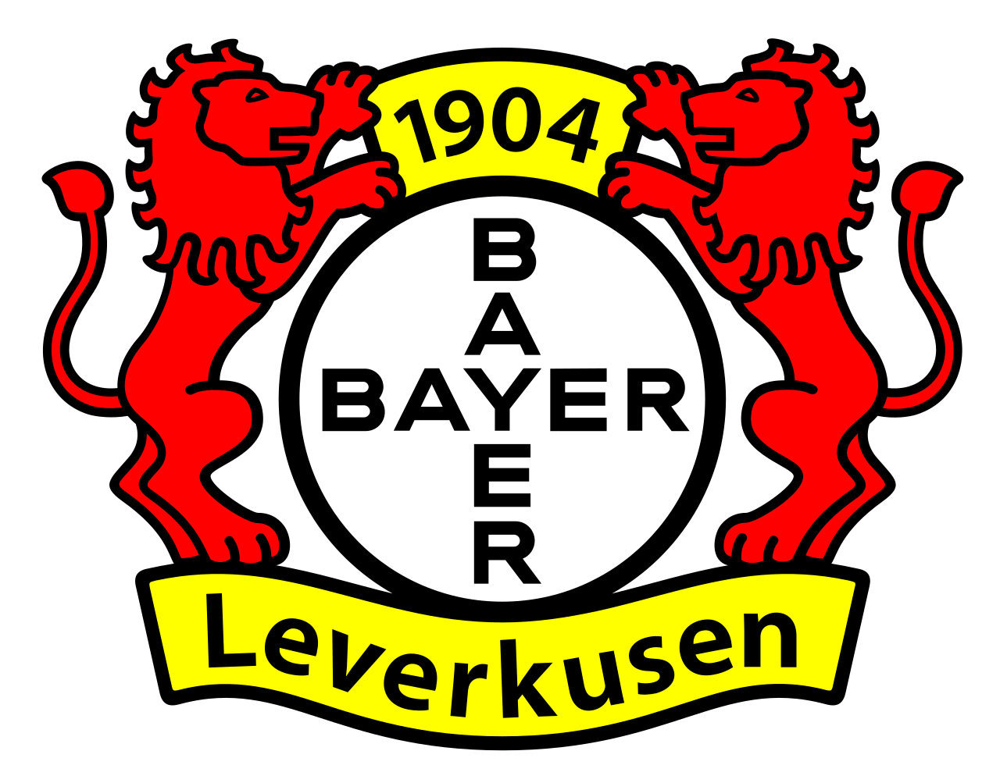
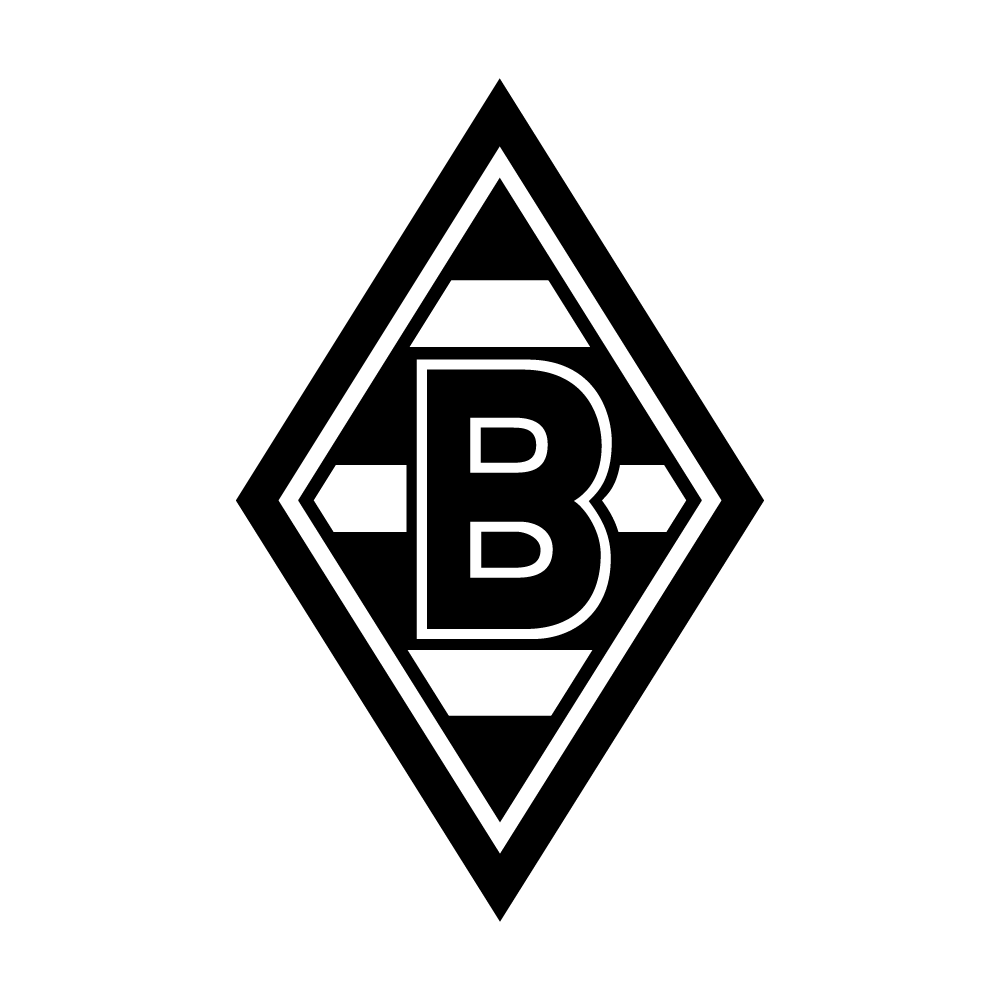

Spieltag 1
Eintracht Frankfurt 4 - 1 Werder Bremen
Sonntag, 23.08.2025 15:30 - Deutsche Bank Park
Spieltag 2
Werder Bremen 3 - 3 Bayer Leverkusen 
Samstag, 28.02.2026 15:30 - Weserstadion
Spieltag 3
 Borussia M' Gladbach 0 - 4 Werder Bremen
Sonntag, 14.09.2025 17:30 - Borussia Park
Spieltag 4
Werder Bremen 0 - 3 SC Freiburg
Samstag, 20.09.2025 15:30 - Weserstadion
Spieltag 5
FC Bayern München 4 - 0 Werder Bremen
Freitag, 26.09.2025 20:30 - Allianz Arena
Spieltag 6
Werder Bremen x-x Team
Wochentag, xx.xx.202x xx:30 - Weserstadion
Spieltag 7
Team x-x Werder Bremen
Wochentag, xx.xx.202x xx:30 - Stadion
Spieltag 8
Spieltag 9
Spieltag 10
Spieltag X